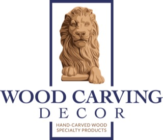
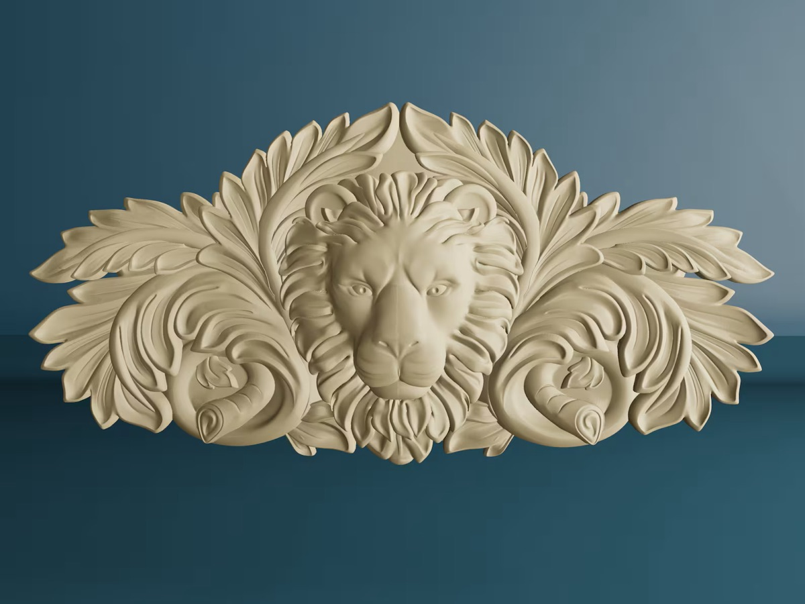
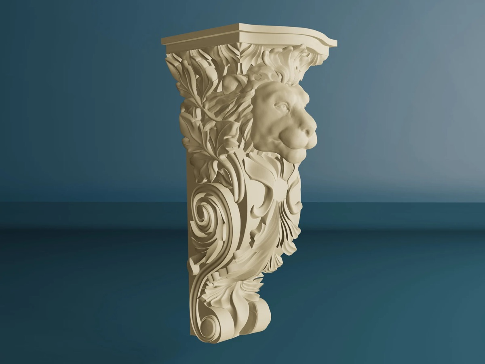
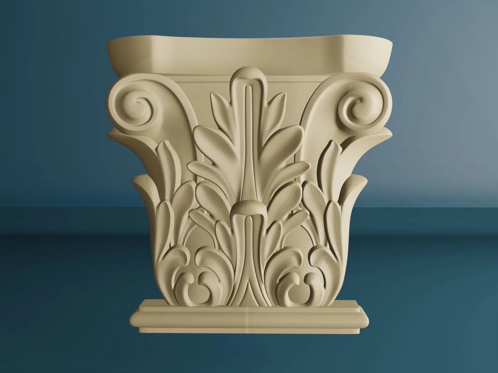
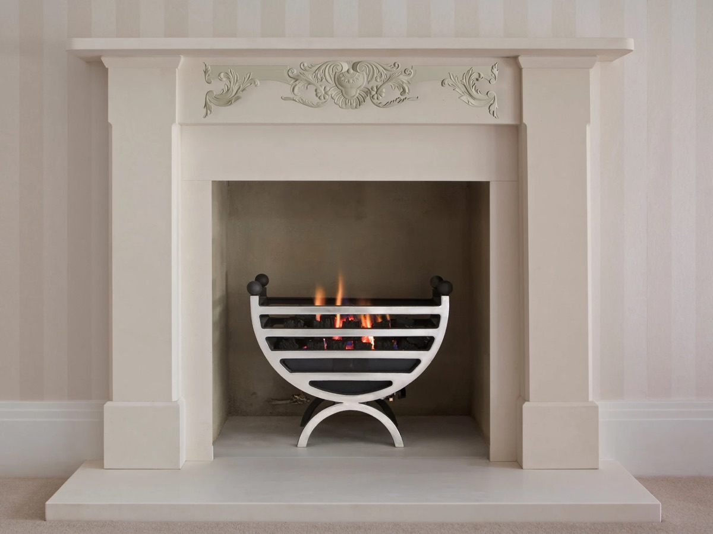
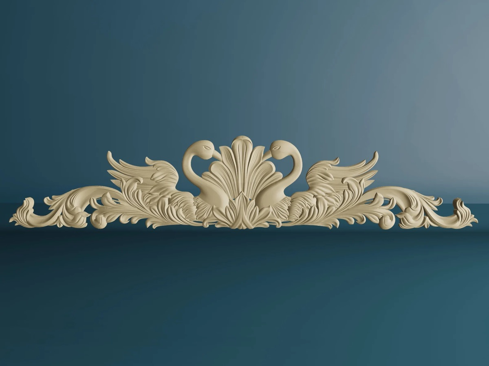

Pick the form.
Choose a wide appliqué, a focused relief, or a vertical architectural accent to suit the composition.

DECORATIVE WOOD CARVINGS
Appliqués, corbels, reliefs, and capitals for mantels, furniture, cabinetry, and architectural accents. Find the form that makes the project.
Explore Carvings See a mantel transformed

COMPARE THE CARVING TYPES
Start with the shape and placement.
Select a carving type for a closer look.
Low, wide scrollwork for a decorative focal point

Vertical, bracket-shaped sculptural accents
A central lion motif framed by carved foliage

Column-top forms with flowing leaf ornament

SEE THE EFFECT IN CONTEXT
Here, a baroque appliqué draws the eye across the mantel front. Its scrolling shape contrasts with the straight lines of the surround, creating a focal point above the fireplace.
For furniture and cabinetry, think about the same balance: the carving’s width, its proportions, and the surface around it.
Explore appliquésBEFORE YOU BUY
A practical plan for narrowing your selection.
Choose a wide appliqué, a focused relief, or a vertical architectural accent to suit the composition.
Note the available width, height, and clearance. Compare those measurements with the selected product’s confirmed dimensions.
Before ordering, check material, finish, installation requirements, price, and delivery for your chosen carving.
SEE THE SCALE IN A ROOM
A carving should work with the room around it. Compare how a corbel or capital could sit within an architectural setting.
Concept preview: illustrative proportions, not confirmed product sizes. Room imagery and exact dimensions to follow.
What to confirm before orderingMAKE AN INFORMED CHOICE
Product specifications and ordering policies are being confirmed. These are the questions the shop will answer.
Materials and dimensions are not yet confirmed for this preview. Before buying, check the selected design’s width, height, depth, and wood species against your project requirements.
Paint and stain suitability will need to be confirmed for each product, including any supplied finish or preparation requirements. The photographs alone do not establish finishing compatibility.
Installation guidance is pending. Confirm mounting requirements and suitability for the intended location before ordering. Corbel shapes shown here do not establish load-bearing capacity.
This is a collection preview; checkout is not open. Product prices, availability, customization, delivery areas, lead times, and return terms still need confirmation.
FIND YOUR NEXT PROJECT’S FOCAL POINT
Browse the collection preview · Product pricing and ordering to follow
